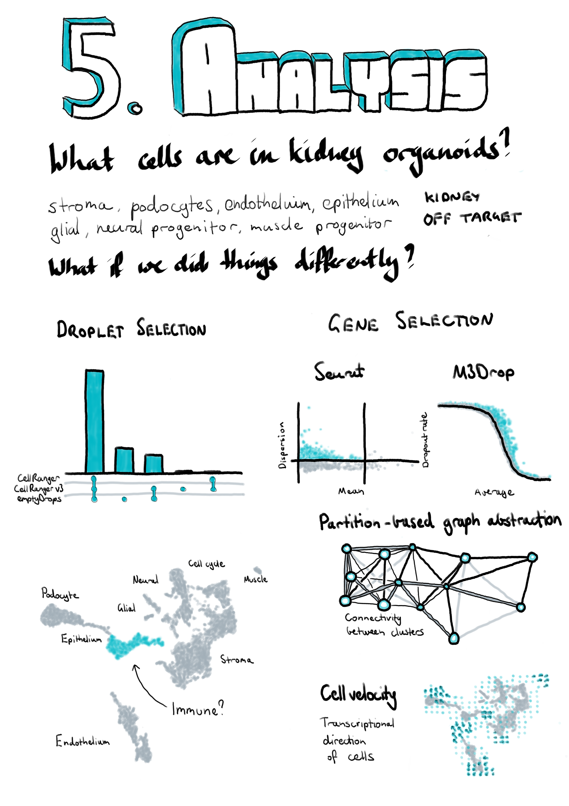

Chapter 5 Analysis of kidney organoid scRNA-seq data
“And the first lesson of all was the basic trust that he could learn. It’s shocking to find how many people do not believe they can learn, and how many more believe learning to be difficult.”
— Frank Herbert
Dune, 1965

5.1 Introduction
The kidney has a branching structure where incoming blood arteries are split into smaller and smaller vessels. At the end of the smallest capillaries are nephrons, the functional unit of the kidney. Blood is filtered in the glomerulus and the filtrate passes through the proximal tubule, loop of Henle, and distal tubule, then into the collecting duct. Each section of the nephron is made up of specialised cell types responsible for balancing concentrations of particular molecular species between the filtrate and blood. To do this they produce a range of specific transporter molecules that secrete or extract molecules including metal ions, small organic molecules and water. Disruptions to these important cell types can have a profound effect on the body as the delicate balance between concentrations of molecular species is lost.
Kidney disease can develop over a lifetime as the results of a range of factors. When the condition becomes chronic the only reliable treatments currently available are dialysis, which is time consuming and unpleasant, or a kidney transplant. Some kidney conditions are purely genetic and are caused by defects in kidney development or structure rather than damage from external factors. Understanding kidney development and structure is key to understanding these diseases and developing treatments for them.
One way to investigate kidney development is to grow kidney tissue from stem cells [182,188]. By providing the correct growth factors and conditions, stem cells which could become any cell type can be directed to differentiate into kidney tissue. Part of this process involves transferring the cells from growing in a flat, two-dimensional layer on a plate to a three-dimensional environment, where different types of cells can interact with each other and form structures that replicate a nephron. These tissues are known as kidney organoids and can be used to model various aspects of kidney development, but the extent to which organoids are useful depends on how well they replicate real kidney cell types.
Organoids have typically been characterised by immunofluorescence imaging using antibodies for known markers of nephron segments and cell types. This approach makes it easy to see what structures are present in an organoid and if their morphology resembles real tissues. However, using immunofluorescence relies on prior knowledge about which proteins are important, as well as antibodies for those proteins being available. Typically only four or five colour channels are available for immunofluorescence imaging, limiting the number of proteins that can be shown at once. Bulk RNA sequencing has also been used to characterise kidney organoids. While this approach is less biased and measures expression across the transcriptome, it only provides a global average of expression across an organoid and cannot show exactly which cell types are present or which genes are expressed in the same cells. Single-cell RNA-seq addresses some of these limitations by measuring expression in individual cells, allowing cells with similar expression profiles to be identified and investigated.
As in many other areas, scRNA-seq has been rapidly embraced as a useful tool in studying kidney development and there have already been several studies investigating the cell types present in adult kidney, developing kidney and kidney organoids. During my PhD I have contributed to this aspect of several studies [187,190,214,215]. The work I was most closely involved in profiled a set of kidney organoid scRNA-seq samples to identify the cell types that were present. The analysis we presented in this publication followed a standard scRNA-seq workflow including pre-processing, quality control, clustering and ordering of cells, and detection of marker genes. But there were still many decisions we had to make during the analysis. Which tools should be used for each step and which parameters should we use for these tools? Should we have used any alternative analysis approaches? In this chapter I revisit some of those decisions, demonstrate some alternative methods and discuss what difference they might have made to the results.
5.2 Summary of published work
The dataset I present here consists of scRNA-seq data from three kidney organoids. Cells from the CRL1502-C32 human iPSC cell line were cultured according to the Takasato kidney organoid protocol [186] to day 25. Three organoid samples were taken and dissociated before capturing cells in parallel on 10x Genomics Single Cell Chips and preparing sequencing libraries using the 10x Genomics Single Cell Library Kit V2. Sequencing was performed on an Illumina HiSeq using 100 base pair paired-end reads at the Australian Genome Research Facility. The organoid differentiation and cell isolation was performed by Pei Xuan Er and Alex Combes.
This dataset was first introduced in “Evaluation of variability in human kidney organoids” [187]. This study investigated the robustness and repeatability of the organoid differentiation protocol by comparing RNA-seq data from multiple batches, cell lines and time points. We found that organoids from the same batch had highly correlated expression profiles but that there could be significant differences between batches. The genes that were differentially expressed between batches were compared with a time course of organoids taken at different stages in the protocol. We saw that many of the differences between batches were in genes involved in organoid maturation, suggesting that some batches grow faster than others. This is an important consideration for experiments that want to make comparisons between organoids, for example between disease and gene-corrected cell lines. To confirm this result at the single-cell level we compared the organoid dataset described above with a second batch containing a single organoid. Integration and clustering with Seurat [119,129] produced 13 clusters that showed expression of markers for important kidney cell types as well as some off-target populations. These clusters contained cells from all four organoids but the proportions were different, particularly between the batches, with the fourth organoid being depleted for stromal populations and showing lower expression of mature podocyte genes. While this result reinforces the findings from the bulk RNA-seq data, it is difficult to say what might be the effect of different patterning, dissociation and cell capture rather than organoid maturation. The computational and statistical analysis for this study was performed by Belinda Phipson. I performed pre-processing of the single-cell data using Cell Ranger and some of the early analysis.
While this study made use of kidney organoid scRNA-seq data it didn’t fully profile the cell types present. To better understand what cell populations are present in these organoids and detectable using scRNA-seq, we performed a re-analysis of this data that was published as “Single-cell analysis reveals congruence between kidney organoids and human fetal kidney” [214]. This study was lead by Alex Combes who performed much of the lab work and interpretation of results while I performed all the computational analysis. Details of this analysis are presented online at http://oshlacklab.com/combes-organoid-paper/ [216]. The full text of this publication is included in Appendix E but I will summarise the results here. Using a similar workflow based around the Seurat package we identified 13 clusters including clusters that were labelled as covering kidney stroma, podocytes, epithelium and endothelium, based on the expression of known kidney marker genes. Other clusters were associated with active phases of the cell cycle as well as off-target muscle progenitor, neural progenitor and glial cells types. Re-clustering of the podocyte and epithelial clusters revealed more detail of the nephron lineage with five clusters covering nephron progenitors, podocyte precursors, mature podocytes, proximal tubule precursors and distal tubule precursors. We used Monocle [77,138] to order the cells along a pseudotime trajectory which showed two branches, with nephron progenitors heading towards either a podocyte or tubular fate. Characterising the samples in this way allowed us to identify many of the cell types we would expect to be present in a developing human kidney, but this process cannot show exactly how similar they are to real tissue. For example we found podocytes in these organoids, but are organoid podocytes the same as normal kidney podocytes?
To answer this question we used the Seurat integration method based on canonical correlation analysis [120,121] to combine our kidney organoid datasets with an scRNA-seq dataset from human foetal kidney previously published by Lindström et al. [195]. Clustering of the combined dataset produced 16 clusters, most of which contained cells from both datasets and covered similar cell types to what we saw in the organoid-only analysis. Some clusters were only present in one dataset, including the off-target muscle and neural cell types in the organoids and blood cells in the foetal kidney data. One of the new clusters represented a population of immune cells. Most of these came from the foetal kidney dataset but a few originated from the organoids. While there were insufficient cells to truly say that immune cells are present in these organoids it is possible they could arise somewhere during the differentiation process.
As with the organoid data we looked more closely at the nephron lineage in the combined dataset. We saw evidence of similar developmental trajectories with more mature podocytes in the organoid samples and fewer distal tubule cells. At this resolution we also found two clusters unique to the human foetal kidney data: a stromal population that may be more stem-like in nature and originally clustered with the nephron progenitors, and a separate podocyte cluster. Some of the differences between the datasets can be explained by the differences between the samples, for example the human foetal kidney dataset comes from a section of the outer cortex rather than a whole organ. For this reason it is important to look for differences between the datasets within cells that have been labelled as the same cell type. Doing this revealed an overall stress or heatshock signature in the foetal kidney data that is most likely the result of the tissue being exposed to suboptimal conditions and made it difficult to see smaller differences. However, we were able to identify some differences, including in signalling pathways, that may suggest further avenues for directing kidney organoid differentiation. Overall our analyses of this dataset support the presence of important kidney cell types in kidney organoids and builds confidence in their usefulness for disease modelling and drug screening studies.
5.3 Outline and motivation
While we followed a well-established workflow in our previous analysis, there were still many decisions we had to make about which analysis tools and parameters to use. As I discussed in Chapter 2 methods for analysing scRNA-seq data have developed at a rapid rate and there are always new software packages to try. New methods should improve on what already exists or approach the data in a different. Even when a dataset is well understood applying new methods can reinforce what has already been seen or reveal interesting new information. For the remainder of this chapter I will explore some of the alternative analytical choices we could have made and approaches we could have used in our analysis of the kidney organoid dataset, and what difference they may have made to our interpretation of this data. I have selected these methods to look at because they either do something significantly different to what we used in our previous analysis or they have been shown to be effective in comparison studies. This chapter also provides an illustration of some of the thought processes involved in an analysis project. An outline of the analysis I have performed and where it will be discussed in this chapter is shown in Figure 5.1. I begin by looking at some of the pre-processing steps that are often overlooked, particularly methods for selecting cell-containing droplets. I also compare the alignment-based quantification produced by the standard pre-processing pipeline to a pseudoalignment quantification. The next section explores some of the choices that can be made when performing quality control to select high-quality cells. The main aim of this analysis is to identify the cell types present in kidney organoids which requires clustering together similar cells. Clustering methods often require a set of genes to be chosen and here I have trialled an alternative gene selection method and compared the resulting clusters to the previously published analysis. In the final section of this chapter I apply two newly developed analysis approaches to this dataset to see what additional information they can add. Details of the analysis including the code used and exploratory visualisations are displayed on a website at https://lazappi.github.io/phd-thesis-analysis/ [217] and the analysis methods used are provided in Appendix F.
![Outline of analysis of the kidney organoid dataset. Filled coloured boxes indicate stages of the analysis. Purple stages contribute to the final results shown here while blue stages were performed as a comparison. Grey stages were performed in the published analysis but are not shown here. The main analysis workflow is indicated with black arrows and comparison stages with pointed grey arrows. The published workflow is shown using smaller open grey arrows with dotted lines. Green shaded boxes show the software tools used and pink shaded boxes indicate the sections of this chapter that discuss the results of those stages.](figures/05-workflow.png)
Figure 5.1: Outline of analysis of the kidney organoid dataset. Filled coloured boxes indicate stages of the analysis. Purple stages contribute to the final results shown here while blue stages were performed as a comparison. Grey stages were performed in the published analysis but are not shown here. The main analysis workflow is indicated with black arrows and comparison stages with pointed grey arrows. The published workflow is shown using smaller open grey arrows with dotted lines. Green shaded boxes show the software tools used and pink shaded boxes indicate the sections of this chapter that discuss the results of those stages.
5.4 Pre-processing
The first stage in any analysis of sequencing data is to convert the files returned by the sequencing machine to a format suitable for analysis. For scRNA-seq data produced using the 10x Genomics Chromium platform the standard tool for accomplishing this task is 10x’s Cell Ranger software. This pipeline performs a number of tasks including demultiplexing the BCL base call files returned by Illumina sequencers and converting them to more common FASTQ sequence files, aligning reads to a reference genome, counting reads overlapping annotated genes, separating cells by barcode, and deduplicating UMIs. Some of these stages are performed by other tools such as Illumina’s bcl2fastq software and the STAR splice-aware aligner [8] but with wrappers designed to handle specific features of 10x libraries. For the analysis presented here I have performed pre-processing of the first batch of three organoid samples using Cell Ranger (v3.0.1) with the GRCh38 reference genome provided by 10x Genomics (v3.0.0) based on the ENSEMBL gene annotation (v93). Each sample was processed separately to produce an expression matrix and then these were aggregated without any normalisation to form a single dataset.
5.4.1 Droplet selection
One of the final steps in pre-processing a dataset from a droplet-based cell capture method is to select droplets that contain cells. Many droplets are produced during the cell capture process but most of these will not contain cells and any reads associated with them will be the result of ambient RNA present in solution. The original Cell Ranger selection algorithm (used in our previous publications) required an expected number of cells for each sample (\(N\)). The 99th percentile of the total number of UMI counts in the top \(N\) cells was then taken as a robust estimate of the maximum number of counts in a cell and any droplet with at least 10 percent of this maximum was selected as a cell [34]. A similar approach is to select droplets that fall above the knee point (where curvature is minimised) of the cumulative fraction of counts with respect to increasing total count [31]. While these methods effectively select most real cells, they risk overlooking cells that have a lower RNA content than the majority of cells in the sample. The EmptyDrops method [99] in the DropletUtils package provides an alternative approach (Figure 5.2). A threshold on total counts is selected, below which droplets are assumed to be empty, and these empty droplets are used to produce a profile of the ambient RNA in the sample. A Monte Carlo sampling approach is then used to calculate a p-value indicating whether a particular droplet is likely to have come from the ambient distribution. A traditional threshold is also used to select cells with more total counts than the knee point when droplets are ordered by total counts. Cell Ranger v3 uses a modified version of the EmptyDrops procedure where the original selection method is substituted for the knee point threshold.
Figure 5.2: Droplet selection using EmptyDrops. Scatter plot of ordered total counts per droplet. Points are coloured by whether they were identified as cells (pink) or empty (black). Horizontal dotted lines show the knee point (blue), inflection point (green) and the threshold for droplets assumed to be empty (purple).
I compared the newer EmptyDrops and Cell Ranger v3 droplet selection methods with the older Cell Ranger thresholding approach. As we would expect, the original Cell Ranger algorithm is the most conservative, selecting only 7006 cells (Figure 5.3A). The EmptyDrops and Cell Ranger v3 methods, which use a testing procedure rather than a strict threshold, select many more cell-containing droplets. Many of these cells are identified by both methods but there are also a large number that are identified only by EmptyDrops. This is surprising as the two software packages provide different implementations of what is largely the same algorithm. Some of these differences may be due to the parameters I have chosen for EmptyDrops but it is difficult to say if these are different to those that are used by Cell Ranger. This highlights some of the trade-offs inherent in using a pre-designed pipeline for processing any dataset. While it is convenient to have a single tool that automates a series of tasks, this often comes at the cost of less control over each stage than would be possible if using a series of individual tools.
Figure 5.3: UpSet plot [218] comparing droplet selection methods. Cell Ranger v3 and EmptyDrops identify significantly more cells than the traditional Cell Ranger approach. My use of EmptyDrops also identifies a set of cells that are overlooked by the automated Cell Ranger v3 procedure.
It is difficult to evaluate if the extra cells identified by EmptyDrops are real cells, or if the algorithm has been too permissive and selected droplets that are actually empty. In the following section I will perform further quality control to remove low-quality cells so at this stage I chose to keep cells identified by either the EmptyDrops or Cell Ranger methods. Of the 945038 droplets with at least one count present in the raw dataset, 10002 were selected as cells by at least one of these methods.
5.4.2 Alevin comparison
Cell Ranger is based on the traditional workflow for processing RNA-seq reads, which is to align them to a reference genome then count how many reads overlap annotated genes. In recent years it has become common to use methods such as Salmon [12] and Kallisto [11] that directly estimate transcript expression without alignment. While these approaches do not produce an exact genomic location for each read they can be much faster, which is appealing for scRNA-seq data as there are many more cells to quantify. However, factors such as cell barcodes, UMIs and different model assumptions mean that these tools have had to be adapted for scRNA-seq data. Alevin [91] is the scRNA-seq mode available in Salmon.
Alevin has its own method for identifying which droplets contain cells. First, the knee point in the cumulative distribution of barcode frequencies is identified and any droplets above this are assumed to contain cells. The Levenshtein distance [219] between the barcodes of all droplets is calculated and if they are not sufficiently close to other barcodes they are considered to be noise and the associated reads discarded. Alevin performs a second round of cell whitelisting following quantification. Droplets are divided into three zones: high-quality (top half above the knee point), ambiguous (bottom half above the knee point) and low-quality (well below the knee point). A naïve Bayes classifier based on a set of features, including the fraction of reads mapped, the fraction of mitochondrial reads and the duplication rate, is then used to classify droplets as either high or low-quality. This is very different to the EmptyDrops approach, using a machine learning technique rather than a statistical test and technical features rather than the overall expression profile, and is more similar to approaches that have been suggested for quality control of cells [100].
Figure 5.4A shows a comparison of the alevin approach to the two methods I used to select cells in the previous section. Most of the cells are identified by all three methods but just like EmptyDrops, alevin finds a large number of cells that are overlooked by Cell Ranger v3. What is particularly striking is that there is very little overlap in the extra cells identified by alevin and EmptyDrops suggesting that the differences between the two approaches may be important. However, I should note that alevin uses its own quantification as input for classification while I provided the counts from Cell Ranger to EmptyDrops, so some of the differences may be due to the data they were given rather than the selection methods themselves. Alevin (and Cell Ranger v3) also processes the three samples separately while I performed EmptyDrops on the whole dataset.
![Comparison to quantification using alevin. (A) UpSet plot comparing the droplets identified as cells by the alevin, Cell Ranger v3 and EmptyDrops methods. (B) Scatter plot comparing total counts per cell as estimated by alevin and the alignment-based Cell Ranger pipeline. Points are coloured according to the method that identified them as cells (alevin only (green), alignment-based only (blue), both (pink)). Thin purple line shows \(y = x\), thick blue line shows a linear fit for cells identified by both methods. (C) Scatter plot comparing mean counts per gene as estimated by the two pipelines, point colours and lines as in (B). (D) Relationship between the total counts per gene and the percentage of cells with a zero count for each pipeline.](figures/05-alevin-comparison.png)
Figure 5.4: Comparison to quantification using alevin. (A) UpSet plot comparing the droplets identified as cells by the alevin, Cell Ranger v3 and EmptyDrops methods. (B) Scatter plot comparing total counts per cell as estimated by alevin and the alignment-based Cell Ranger pipeline. Points are coloured according to the method that identified them as cells (alevin only (green), alignment-based only (blue), both (pink)). Thin purple line shows \(y = x\), thick blue line shows a linear fit for cells identified by both methods. (C) Scatter plot comparing mean counts per gene as estimated by the two pipelines, point colours and lines as in (B). (D) Relationship between the total counts per gene and the percentage of cells with a zero count for each pipeline.
Similar to Cell Ranger, the quantification stage of Alevin involves several steps including mapping reads and deduplicating UMIs. Alevin maps reads to the transcriptome and groups them by cell barcode and UMI. To deduplicate UMIs, alevin considers the mapping location and the UMI sequence (to account for sequencing errors). Because reads have been mapped to the transcriptome rather than the genome, there is an additional layer of information that can be useful for identifying if reads with the same UMI map to the same location. This should avoid over collapsing UMIs. Following these steps, the transcriptome level expression estimates are aggregated to the gene level for analysis. Figure 5.4B shows a comparison of the total counts per cell between alevin and the alignment-based approach using Cell Ranger. For cells that were identified by both pipelines (pink) the total counts are very similar. Cells identified just by the alignment-based approach (blue) tend to have fewer counts than those identified only by alevin (green). There are more differences if we look at the mean counts per gene (Figure 5.4C). Most of the variability is at low expression levels, but there are some genes that are lowly expressed by one method but have relatively high expression in the other. One reason for this could be either method missing (or incorrectly assigning) counts altogether. Figure 5.4D shows the relationship between the total counts per gene and the percentage of cells with zero counts. This relationship is noisier for the alevin quantification, particularly below the trend line, and also shows more genes with a very low percentage of zeros.
While there are differences between the results from the two approaches there is nothing in this comparison to suggest that either is inaccurate. Genes that are found to be expressed by only one of the methods could possibly lead to differences in downstream interpretation but it is very difficult to say which is a better representation of true expression and it is unlikely that all genes providing similar evidence (for example markers of a cell type) would be affected in the same way. On this evidence alevin presents a viable alternative to alignment-based quantification for scRNA-seq data, particularly for large datasets where computational time is a concern. However, when alignment is required anyway, it is simpler and avoids repetition to use those alignments to produce an expression matrix for further analysis. For the remainder of the analysis I have used the alignment-based quantification of this dataset.
5.5 Quality control
In the previous section I discussed methods for selecting droplets that contain cells but there are further steps that are required in order to select high-quality cells. There are a variety of reasons that we may want to remove cells before further analysis. Cells can become damaged during processing, may not contain sufficient counts for analysis or may be the result of doublets where two cells are captured in the same droplet. Because these factors are not related just to the number of reads per cell they may not have been detected by the methods used previously and require different approaches.
Two tools that are useful for quality control of scRNA-seq data are the scater [101] and scran [109] packages. The scater package provides functions for calculating commonly used quality control metrics, adding annotations and visualisation, while scran can be used for various calculations such as assigning cell cycle phase and doublet scoring. After selecting cell-containing droplets I used these two packages to add extra information to the dataset. Additional feature annotation was retrieved from BioMart [220] using the biomaRt package [221] via functions in scater. Before calculating scater’s quality control metrics I added mitochondrial genes as a feature control set, as the proportion of counts assigned to these genes can be an indicator of the health of a cell. I also used the cyclone function [222] in scran to score cell cycle activity and assign cell cycle phases to each cell. This method uses the relative expression of pairs of genes from previous studies of the cell cycle in order to score cell cycle activity. Thresholds can then be applied to these scores to assign a phase to each cell. Pre-computing a range of metrics is a valuable feature of scater as they are immediately available for exploration and filtering.
The simplest approach to quality control is to select thresholds for various metrics and to remove cells that fall outside these values. This is the approach I have taken here and in the previously published analysis. While previously these thresholds were selected by visually inspecting distributions, here I have used a more data-driven approach by selecting thresholds that are a specified number of median absolute deviations (MADs) from the median value. This is made easy by the isOutlier function in scater. The first filter I have applied is to the number of counts per cell, with thresholds on both the total number of counts per cell and the total number of features that are expressed (Figure 5.5A). These filters are important as cells that fall below these thresholds do not contain enough information to be useful for analysis. A similar threshold is applied to the percentage of counts assigned to mitochondrial genes (Figure 5.5B). A high proportion of mitochondrial expression is a sign of distress and can indicate that cells have become damaged during processing. Once most of the low-quality cells have been removed it becomes possible to check for doublets. Here I have used a simulation-based approach implemented in scran. This method is similar to the one suggested by DoubletFinder [98] and creates synthetic doublets by combining counts from randomly selected cells. The density of simulated doublets in the neighbourhood of each cell in PCA space is then used to calculate a doublet score to which a cutoff can be applied (Figure 5.5C). For this threshold I have chosen a value that gives a number of doublets roughly equal to the expected number of the cell capture technology (around one percent for the 10x Chromium).
![Thresholds used for quality control. (A) Scatter plot of total counts per cell against number of features expressed. Thresholds for selecting high-quality cells are show by purple (features) and green (counts) dotted lines. Points are coloured according to whether cells were kept (blue) or removed (pink). (B) Histogram of percentage of counts assigned to mitochondrial genes with filtering thresholds shown in pink. (C) Histogram of doublet scores with threshold shown in pink. (D) PCA plot based on technical factors. Cells are coloured according to whether they were removed by both the PCA outlier method and manual filtering (orange) or just manual filtering (pink).](figures/05-qc-thresholds.png)
Figure 5.5: Thresholds used for quality control. (A) Scatter plot of total counts per cell against number of features expressed. Thresholds for selecting high-quality cells are show by purple (features) and green (counts) dotted lines. Points are coloured according to whether cells were kept (blue) or removed (pink). (B) Histogram of percentage of counts assigned to mitochondrial genes with filtering thresholds shown in pink. (C) Histogram of doublet scores with threshold shown in pink. (D) PCA plot based on technical factors. Cells are coloured according to whether they were removed by both the PCA outlier method and manual filtering (orange) or just manual filtering (pink).
An alternative approach is to rely purely on the quality control metrics themselves rather than manually selecting thresholds. PCA can be performed using the technical metrics such as total counts per cell rather than gene expression levels, and then outliers can be detected in PCA space (Figure 5.5D). This approach relies on the assumption that most cells will be high-quality and that the values that have been calculated will be sufficient to separate them from the low-quality cells. On this dataset the PCA-based approach identified a subset of the cells that were removed by my manual thresholds as low-quality. While I believe the idea of an automated quality control method is valuable, it will require more work to identify which features are most useful and it is likely that they will differ between technologies and tissue types. Additionally, any automated approach will always be more difficult to interpret than clear manual thresholds. For these reasons I have used the dataset produced by filtering cells using the manual thresholds for the rest of this analysis. I have also performed a minimal filtering of genes, selecting those that have at least one count in at least two high-quality cells. After quality control the dataset had 8059 cells and 22739 genes with a median of 7838 counts per cell and a median of 2506 genes expressed.
After removing low-quality cells it is important to inspect the data again to check that the quality control has been successful. If the selected thresholds are too severe it is possible to remove interesting populations of cells that differ from the majority of the dataset, such as a rare cell type that is smaller and therefore has less RNA. One way to do this is to look at differences in expression between the cells that have been removed and those that have been kept. Here I have calculated the predicted log fold change using the predFC function in the edgeR package and plotted it against the average expression for each gene (Figure 5.6A). Seeing a set of interesting genes (in this case known kidney marker genes) with positive fold changes in the removed cells would suggest that the selected thresholds are too stringent. That is not the case here as can be seen from the 15 genes with greatest fold change shown in Figure 5.6B.
![Validation of quality control. (A) Scatter plot of genes showing average expression against predicted fold change for removed cells compared to kept cells. Points are coloured according to the difference in proportion of cells that express each gene between removed and kept cells. (B) Top 15 genes when sorted by positive fold change in removed cells. (C) t-SNE plots of cells coloured by various technical factors including sample, droplet selection method, assigned cell cycle stage, total counts, total features and percentage mitochondrial counts.](figures/05-qc-validation.png)
Figure 5.6: Validation of quality control. (A) Scatter plot of genes showing average expression against predicted fold change for removed cells compared to kept cells. Points are coloured according to the difference in proportion of cells that express each gene between removed and kept cells. (B) Top 15 genes when sorted by positive fold change in removed cells. (C) t-SNE plots of cells coloured by various technical factors including sample, droplet selection method, assigned cell cycle stage, total counts, total features and percentage mitochondrial counts.
On the other hand if the selected thresholds are not strict enough we will have retained a set of low-quality cells. One way to identify these is to look at the dataset in a reduced dimensional space using techniques such as t-SNE or UMAP, highlighting technical factors that may be associated with low-quality cells. If a low-quality population is present we would expect to see it separate from the other cells. This approach is taken in Figure 5.6C where I have coloured a t-SNE plot by organoid sample, the droplet selection method, assigned cell cycle stage, total counts, total features and percentage of counts assigned to mitochondrial genes. These plots show a small population of cells that have fewer counts and have mostly been selected using the EmptyDrops method. However, this population is not clearly separated and may represent some intermediate cell type. At this stage I will retain those cells but following clustering it may be appropriate to revisit that decision if they do not appear to represent a logical biological population.
5.6 Clustering
Now that we have a dataset containing high-quality cells, the next step in my analysis is to perform clustering. It is necessary to use some technique to group and label cells. For this kind of dataset that contains an unknown set of cell types, an unsupervised approach is a good fit. Clustering allows us to group cells based purely on their expression profiles without making any assumptions about what those groups should be. Here I am going to use the graph-based clustering method available in the Seurat package. The first step in this approach is to select a subset of genes to use.
5.6.1 Gene selection
Most genes will either be expressed at a consistent level across all cells in a dataset or have too few counts to provide enough information about differences between cells. To reduce the noise in the dataset and the computational cost of analysis we want to select a set of genes that will be useful for separating cells. An intuitive approach is to filter based on the mean expression level to remove lowly expressed genes, and the gene variability to select those that explain differences between cells. This is the default approach used in Seurat (Figure 5.7A). The thresholds I have chosen here select 2457 highly variable genes.
![Selecting genes for clustering. (A) Scatter plot of mean gene expression level against dispersion. The default Seurat selection method sets thresholds on these axes. Purple lines indicate thresholds and selected genes are coloured blue. (B) The M3Drop method fits the relationship (purple line) between average expression (x-axis) and dropout rate (y-axis). Genes that have significantly more zeros than expected are selected (pink). (C) Comparison of gene selection methods. The dropout rate calculated by M3Drop is plotted against the dispersion calculated by Seurat. Points are coloured according to whether they were selected by Seurat (blue), M3Drop (pink) or both (green). (D) Bar plot of the number of genes selected by each method and the intersection. Most genes are identified by only one approach.](figures/05-gene-selection.png)
Figure 5.7: Selecting genes for clustering. (A) Scatter plot of mean gene expression level against dispersion. The default Seurat selection method sets thresholds on these axes. Purple lines indicate thresholds and selected genes are coloured blue. (B) The M3Drop method fits the relationship (purple line) between average expression (x-axis) and dropout rate (y-axis). Genes that have significantly more zeros than expected are selected (pink). (C) Comparison of gene selection methods. The dropout rate calculated by M3Drop is plotted against the dispersion calculated by Seurat. Points are coloured according to whether they were selected by Seurat (blue), M3Drop (pink) or both (green). (D) Bar plot of the number of genes selected by each method and the intersection. Most genes are identified by only one approach.
The M3Drop package suggests an alternative approach that considers the proportion of zero counts per gene rather than the variability [104]. Here the idea is that if a gene is important for identifying a cell type then its expression will be concentrated in a subset of cells and there will be more zero counts than would be expected based on the overall mean expression. The original M3Drop method fits a Michaelis-Menten function to the relationships between mean expression and dropout rate (proportion of zeros) but for UMI datasets that have not been sequenced to saturation the authors suggest their NBDrop method instead, which fits a library size adjusted negative binomial model. A binomial test is then used to identify genes that have significantly more zeros than would be expected from the fitted model (Figure 5.7B). By using a statistical test this method removes the need to set multiple thresholds. Here M3Drop has selected 1952 genes with excess zeros.
If we compare the sets of genes selected by these two methods we see that a relatively small subset are identified by both of them (Figure 5.7D). These differences can be explained by the differences between variability and zero counts (Figure 5.7C). For example, it is possible for a gene to vary a lot between different cells but within an expression range that doesn’t result in more zeros. Alternatively, a gene with relatively low dispersion may still have excess zeros if the underlying expression is low enough. For the previously published analysis we used the Seurat selection method, so here I am going to use the genes identified by M3Drop and see what effect that has on the clustering results.
5.6.2 Resolution selection
There are several more steps in the Seurat clustering procedure. Once a set of genes is selected they are used to perform a PCA and a set of principal components is selected. Distances are then calculated between cells in this PCA space and the nearest neighbours for each cell are identified. By comparing the sets of neighbours for two cells and computing the Jaccard index, a shared nearest neighbour graph can be constructed where each node is a cell and the edges are the overlap in their neighbourhoods. A graph modularity optimisation algorithm such as Louvain modularity optimisation [133] can then be used to partition the graph and form clusters of cells. This graph-based clustering approach has been shown to be effective in comparisons of scRNA-seq clustering methods [130,131]. One of the decisions that needs to be made during this procedure is the value of the resolution parameter to use, which affects the number of clusters that are produced. As I have discussed in Chapter 3, clustering trees are one tool that can be helpful in making this decision. Figure 5.8A shows a clustering tree for this dataset with resolutions between zero and one.
Figure 5.8: Selecting a clustering resolution. (A) Clustering tree showing resolutions between zero and one. Pink box shows the selected resolution. (B) Clustering trees with nodes coloured by a selection of published marker genes. Expression signals can help to select a clustering resolution.
The structure of this tree can tell us about how clusters are forming in this dataset. My general approach is to select a resolution where most of the branches have formed but before there are many low in-proportion edges crossing over between branches that can indicate that clusters are unstable. Displaying expression levels of genes that are expected to be important in the dataset adds extra information to the structure of the tree (Figure 5.8B). Here I look to identify at which resolution we see clear, high-intensity signals for these genes. That is, a single or few clusters where they are highly expressed. Based on these trees I have selected a resolution of 0.4 which produces 13 clusters.
5.6.3 Cluster validation
The cluster assignments of the individual cells can be displayed in a reduced dimensional space such as that produced by UMAP [148,223] (Figure 5.9A). The dimensions shown in this visualisation and the cluster labels that are used to colour it are produced using different algorithms. By combining them we can confirm that the two approaches produce similar results. Clusters can have different densities in these plots so it is also useful to know how many cells they contain (Figure 5.9B). Now that we have a set of clusters we can check to see if they are associated with technical artifacts rather than biological factors.
![Validation of identified clusters. (A) Scatter plot of cells in UMAP space coloured by assigned cluster. (B) Bar chart of the number of cells in each cluster. (C) Stacked bar chart showing the proportion of cells in each cluster identified by each droplet selection method, Cell Ranger v3 only (blue), EmptyDrops only (green) or both (pink). (D) Stacked bar chart showing the proportion of cells in each cluster assigned to the G1 (pink), G2M (blue) or S (green) phases of the cell cycle. (E) SinaPlot [224] showing the total number of counts per cell in each cluster. (F) SinaPlot showing the percentage of counts assigned to mitochondrial genes per cell in each cluster.](figures/05-cluster-validation.png)
Figure 5.9: Validation of identified clusters. (A) Scatter plot of cells in UMAP space coloured by assigned cluster. (B) Bar chart of the number of cells in each cluster. (C) Stacked bar chart showing the proportion of cells in each cluster identified by each droplet selection method, Cell Ranger v3 only (blue), EmptyDrops only (green) or both (pink). (D) Stacked bar chart showing the proportion of cells in each cluster assigned to the G1 (pink), G2M (blue) or S (green) phases of the cell cycle. (E) SinaPlot [224] showing the total number of counts per cell in each cluster. (F) SinaPlot showing the percentage of counts assigned to mitochondrial genes per cell in each cluster.
Figure 5.9C shows the proportion of cells in each cluster that were identified by the two droplet selection methods I used, Cell Ranger v3 and EmptyDrops. Most of the additional cells identified by EmptyDrops have been placed in two of the clusters. The cells in these clusters also have fewer total counts (Figure 5.9E) and a lower percentage of mitochondrial counts (Figure 5.9F). This suggests that those clusters are at least in part a result of the lower count cells identified by EmptyDrops and it may be appropriate to remove them from the dataset. However, a large proportion of the cells in those clusters were also identified by Cell Ranger v3 and an alternative hypothesis is that these additional cells belong to a cell type that is smaller or contains less RNA for some other reason. Looking at the marker genes associated with those clusters can help to answer that question (Section 5.7).
5.6.4 Comparison to published clusters
Because we have previously analysed and interpreted this dataset I can compare these clusters to the previously published clusters. It is important to remember the differences between the two analyses. The published analysis included a fourth organoid from a separate batch that I have omitted here and was analysed using the standard Cell Ranger (v1.3.1) and Seurat workflows without EmptyDrops droplet selection or M3Drop gene selection. I also used different quality control thresholds and parameters at some stages. Figure 5.10A shows the proportion of cells in each cluster that were present in the published analysis. All of the clusters have some additional cells which is to be expected given that the use of the newer droplet selection methods produced a dataset with around 1000 more cells. The two clusters that contain the cells only identified by EmptyDrops (Cluster 4 and Cluster 6) stand out as having a very low proportion of cells from the previous analysis.
Figure 5.10: Comparison to previously published clusters. (A) Bar chart showing the proportion of cells in each cluster that were present in the previously published analysis. (B) Heatmap showing the Jaccard index between previously published clusters and the clusters from the current analysis. High values (yellow) indicate that many cells are shared between two clusters while low values (blue) indicate there is little overlap.
To compare the two sets of clusters I have calculated the Jaccard index between each cluster from the previously published analysis and each cluster from the analysis presented here (Figure 5.10B). Some of the clusters (such as Cluster 5) very clearly match up with a published cluster while others have overlaps with multiple similar clusters. For example, Cluster 2 which consists of cells from the two cell cycle clusters in the published analysis. There are four stromal clusters in both analyses but for two of them (Cluster 0 and Cluster 3) the cells are divided differently. The differences in clustering are the result of all the decisions made to this stage of the analysis including which cells and genes have been selected. Without a known truth it is difficult to determine which is better or more correct or if they simply provide different views of the same data with emphasis on different features and it is possible that both sets of clusters are biologically meaningful. The two EmptyDrops clusters do not show obvious signals but they do have some overlap with the published endothelial clusters which suggests that that they may be a previously overlooked endothelial population. To confirm if this is the case we need to check whether they express known endothelial markers. Identifying marker genes for each cluster through differential expression testing can show us which genes are unique to each cluster.
5.7 Marker gene detection
To try and identify which cell types a cluster represents we need to look more closely at what genes are expressed. Ideally we want to identify genes that are expressed in a single cluster at a relatively high level and whose function is well-known enough to interpret. These are often the same genes that are useful for techniques like immunofluorescence imaging. The most common way of identifying marker genes is to test for differential expression between the cells in a cluster and all other cells in the dataset, then inspect the significantly highly up-regulated genes. Many approaches have been suggested for this task, including a range of methods designed specifically for scRNA-seq data. Comparisons of these methods have found that the scRNA-seq specific methods do not show significantly better results than those designed for bulk RNA-seq or standard statistical tests [156,225]. For this analysis I have chosen to use the edgeR package as it performs well in these comparisons and allows for more complex designs such as including the proportion of genes that are expressed per cell (detection rate).
The edgeR method is based on the negative binomial distribution. After calculating normalisation factors to capture differences between cells and estimating common and gene-wise dispersions, a negative binomial is fitted to the dataset. We can evaluate this fit using some of the information calculated by the edgeR model such as the gene means (Figure 5.11A) and proportion of zeros per gene (Figure 5.11B) and comparing it to what we observe in the dataset. When looking at the comparison of means we see that at high expression levels the edgeR estimates become larger than what is observed. We also observed more zeros than expected when the proportion of zeros is low. Checking these fits can help us to decide if the dataset fits an ordinary negative binomial model or whether a zero-inflated negative model would be more appropriate, as has often been suggested for scRNA-seq data. For example, a method such as ZINB-WaVE can be used to calculate weights that can be added to the edgeR model to correct for zero inflation [64]. In this case I decided the edgeR fit was sufficiently good and these kinds of corrections were unnecessary.
![Results of edgeR differential expression analysis. (A) Scatter plot showing the edgeR fit of gene means. The x-axis shows the average of the observed gene mean and the expected gene mean from the edgeR fit and the y-axis shows the difference between the observed and expected means. The pink line lies at zero and the blue line is a LOESS fit. (B) Scatter plot showing the edgeR fit of gene proportion of zeros. Similar to (A) but showing the observed and expected proportion of zeros. (C) Plot of the biological coefficient as calculated by edgeR against the average log counts per million for each gene. (D) Bar chart of the number of significantly differentially expressed genes for each cluster with positive fold changes. Points show individual genes coloured by their log fold change. Position of each point on the y-axis also shows the log fold change but scaled to the height of each bar. (E) Differential expression results for some genes identified as important markers in the previously published analysis. Size of points indicates the positive log fold change and transparency indicates the negative false discovery rate.](figures/05-de-results.png)
Figure 5.11: Results of edgeR differential expression analysis. (A) Scatter plot showing the edgeR fit of gene means. The x-axis shows the average of the observed gene mean and the expected gene mean from the edgeR fit and the y-axis shows the difference between the observed and expected means. The pink line lies at zero and the blue line is a LOESS fit. (B) Scatter plot showing the edgeR fit of gene proportion of zeros. Similar to (A) but showing the observed and expected proportion of zeros. (C) Plot of the biological coefficient as calculated by edgeR against the average log counts per million for each gene. (D) Bar chart of the number of significantly differentially expressed genes for each cluster with positive fold changes. Points show individual genes coloured by their log fold change. Position of each point on the y-axis also shows the log fold change but scaled to the height of each bar. (E) Differential expression results for some genes identified as important markers in the previously published analysis. Size of points indicates the positive log fold change and transparency indicates the negative false discovery rate.
Another important quantity that is calculated by the edgeR model is the biological coefficient of variation (BCV). BCV is the component of variability that captures the true underlying biological differences between replicates of the same RNA sample. Estimating BCV correctly can be particularly important for highly expressed genes. The BCV plot (Figure 5.11C) shows the common dispersion across all genes (pink line), the dispersion for each individual gene (points) and a trend across the dataset (blue line). The empirical Bayes approach of edgeR borrows information between genes in order to shrink the dispersion towards the trended value to achieve more robust estimates. The shape of the trend line can be used to check how well the BCV has been fit and we expect lowly expressed genes to be more variable than those that are highly expressed. Once we have a fitted negative binomial model we can test for differences between the groups we are interested in.
There are multiple testing procedures available in edgeR but the currently recommended approach is to fit a generalised linear model and test genes using a quasi-likelihood F-test. Figure 5.11D shows the number of significantly up-regulated genes for each cluster identified using this approach and the log fold change for individual genes. For most clusters we see a large number of positive marker genes but for the two clusters that contain most of the EmptyDrops cells many fewer markers have been identified. This could be a result of the lower counts in these clusters or a clue that these are not pure populations with clear markers.
It is important to look at the gene lists for each cluster in detail in order to interpret and assign cell types, but as we have previously analysed this dataset, and can be relatively confident of what it contains, I have plotted the edgeR results for a few of the genes that were previously identified to be important markers (Figure 5.11E). For most of the clusters we see that only markers for one particular cell type are significant with large fold changes and these are consistent with the overlaps between the published clusters presented in the previous section. For the clusters that had little overlap with the published analysis these results help to assign them. Cluster 4 clearly shows up-regulation of endothelial markers confirming this lineage as a possible identity for these cells. The other new cluster (Cluster 6) is more ambiguous with significant results for markers of several cell types but does show up-regulation of immune-related genes. Immune cells are not part of the lineage that these kidney organoids are differentiated towards, but we did see some organoid cells that clustered with immune cells from human foetal kidney in our previous analysis and there is a plausible pathway by which they could develop. Further lab-based experiments would be required to confirm whether these cells exist in kidney organoids. Based on the detected markers I have assigned cell types to clusters as shown in Table 5.1.
| Cluster | Assignment |
|---|---|
| 0 | Stroma |
| 1 | Stroma |
| 2 | Cell cycle |
| 3 | Stroma |
| 4 | Endothelium |
| 5 | Podocyte |
| 6 | Possible immune |
| 7 | Stroma |
| 8 | Endothelium |
| 9 | Glial |
| 10 | Epithelium |
| 11 | Muscle progenitor |
| 12 | Neural progenitor |
5.8 Connecting clusters
Clustering analysis is used to group cells and identify the cell types that are present in a dataset, but by itself clustering doesn’t tell us anything about how those groups relate to each other. In the developmental context where there are multiple differentiating cell types these relationships are of interest. Some aspects of these relationships can be inferred from the proximity of clusters in reduced dimensional space or from the known biology of the assigned cell types, but this is largely based on intuition rather than information in the data. Computational methods to calculate developmental trajectories in scRNA-seq data have been a big focus of early scRNA-seq bioinformatics research. In our published analysis we used the Monocle package to create a pseudotime ordering for cells in the nephron lineage. However, methods like this do not perform as well on larger datasets with many cell types from possibly unconnected lineages, such as we have in the full organoid dataset. Here I will demonstrate two recently developed alternative approaches for connecting clusters and adding context to the current analysis.
5.8.1 Partition-based graph abstraction
Partition-based graph abstraction (PAGA) is a method for reducing the complexity of a dataset by estimating the connectivity between clusters [226]. The result is a reduced graph representation of the dataset where each node is a cluster and the edges show how connected they are (Figure 5.12A). PAGA is available as part of the scanpy package [227] and starts with the same kind of shared nearest neighbour cell graph that is used by Seurat’s graph-based clustering. Connectivity between clusters is calculated by comparing the number of edges between cells in different clusters to the number that would be expected if edges were assigned randomly. This connectivity can be interpreted as the confidence in the presence of an actual connection between clusters.
Figure 5.12: Results of partition-based graph abstraction (PAGA). (A) The cluster connectivity graph produced by PAGA. Each node represents a cluster and edges show the connectivity between clusters. The size of nodes indicates the number of cells in each cluster and the edge colour and transparency show the connectivity from low (blue) to high (yellow). (B). The underlying cell shared nearest neighbour graph. Nodes are cells coloured by cluster and edge weight indicates connectivity.
The results for the organoid dataset show high connectivity between the various stromal clusters that make up the majority of cells. Connectivity between some of the other clusters also confirms what we would expect. For example the podocyte cluster is strongly connected to the epithelial cluster and the two off-target neural clusters (glial and neural progenitor) are strongly connected to each other. The position of the two clusters containing the additional EmptyDrops cells is less clear with connections seen between them, but not as strongly with the other clusters they would be expected to be related to, particularly between the two endothelial clusters. A possible explanation for this are technical features shared by these two clusters but not the clusters they are biologically similar to. The PAGA method does not give any estimate of the stability or variability of the connectivity between clusters but this would be a meaningful area for future research.
In some ways the graph produced by PAGA is similar but complementary to a clustering tree. The PAGA graph considers connectivity between clusters at the same resolution while clustering trees use the overlap between clusters from neighbouring resolutions to build a graph. Interestingly, the authors of PAGA emphasise the ability to explore a dataset at different resolutions by creating PAGA graphs from different sets of clusters produced using different clustering parameters. The development of two independent methods based on building graphs of clusters suggests that this is an approach that could have more general applications. The edges produced by PAGA can show which clusters are related but they don’t provide any directionality to that relationship. One way to add some directionality to the cluster graph suggested by the PAGA authors is to perform a random walk on the cell graph to calculate a diffusion pseudotime across the dataset. However, this approach requires manually defining a root cell to use. An alternative approach for assigning directionality to cells involves looking at the splicing information available in the reads themselves.
5.8.2 Cell velocity
The majority of the reads in an scRNA-seq experiment come from mature mRNA where the introns have been removed through splicing, however some immature mRNA molecules that still retain their intronic sequences are also sequenced. The concept of cell velocity looks at these unspliced reads to determine which genes are being actively transcribed. By looking at which cellular processes are being switched on or off it is possible to infer an overall transcriptional direction for each cell. This approach was popularised for scRNA-seq data by the velocyto package [151]. Two steps are required for cell velocity analysis. First, velocyto inspects the aligned reads for each cell, but instead of only counting those that are inside an annotated exon it also generates a counts matrix of unspliced reads for each gene. These two matrices are then combined to estimate a velocity for each cell by solving a set of differential equations. The velocities can be projected onto a reduced dimensional space by looking at a correlation-based transition matrix on a nearest neighbour graph in that space. When there are more than a few hundred cells it is difficult to look at the velocity for each individual cell, so it can be useful to summarise them in some way. By forming a regular grid of points and using Gaussian smoothing to calculate an average of the nearby cells velocyto calculates a velocity field across the whole dataset, indicating the overall velocity of an area (Figure 5.13).
Figure 5.13: Cell velocity field calculated by velocyto. Points show cells in UMAP space coloured according to cluster. Arrows show the average velocity for cells in each region of a grid, with direction indicating the transcriptional profile cells are headed towards and length giving the rate of change.
Looking at the velocity field for this dataset we see some of the expected developmental trajectories. For example, cells in the epithelial cluster are headed towards the more mature podocyte population. Despite having a limited connectivity in the PAGA results we see the endothelial-like cluster containing EmptyDrops cells (Cluster 4) trending towards the other endothelial cluster. Cluster 6 is again more ambiguous, showing velocity towards both endothelial and stromal clusters. This suggests that if there are immune cells present they may only be a subset of this population. We see little evidence of any clear directionality in the stromal clusters, likely because these cell types are more mature and are not actively changing their transcription profiles. There is an important caveat when looking at these velocyto results, which is that the velocity arrows depend on the space they are projected into and viewing them in different embeddings may give different views. Finding a more robust way to visualise cell velocity would be a useful area of further research that would improve the ability to interpret these results.
5.9 Discussion
In this chapter I have presented an analysis of a kidney organoid scRNA-seq dataset, demonstrating a range of computational tools that can be used and focusing on decisions made during analysis and how these decisions affect the results. The dataset is a subset of the data presented in two previous publications where we investigated variability in the kidney organoid differentiation protocol and profiled the cell types that are present in these organoids. Our previous analysis included data from two batches of organoids as well as integration with a published human foetal kidney dataset but for this chapter I chose to use just the first batch of data which contains cells from three organoids. Data integration is an important area of research that has resulted in a range of methods produced recently, but it is still unclear which approaches are most effective. It can also be difficult to transfer the results of integration between analysis tools. As I wanted to demonstrate a range of tools here I have chosen to work with a single dataset, but how best to combine datasets is worthy of further consideration.
The most significant difference in my new analysis comes from one of the earliest steps. During the pre-processing stage of analysing droplet-based scRNA-seq data empty droplets must be separated from those that contain cells. While this step can have a significant impact on the results of an analysis it is often overlooked. I found that methods such as EmptyDrops that test for differences from the ambient RNA profile identified many more cells than the thresholding approach traditionally used in the Cell Ranger pipeline. Retaining cells that were identified by EmptyDrops or the more recent Cell Ranger v3 which implements a similar approach produced a dataset of 10002 cells. There are two possible explanations for the additional cells identified by these approaches. Either they are more sensitive at correctly selecting cell-containing droplets or they are more permissive and have incorrectly selected empty droplets. Quality control of the selected cells can help to determine which of these is true.
Typically, low-quality cells are removed from a dataset by setting thresholds on quantities that indicate that a cell is damaged or otherwise uninformative. I used a data-driven approach to select filtering thresholds that were a given number of MADs for the median for the total counts per cell, total expressed features per cell and the percentage of counts assigned to mitochondrial genes (which is a proxy for the health of a cell). These thresholds removed 1943 cells leaving 8059, including many of the additional cells identified by EmptyDrops. The fact that these cells were retained suggests that they are not obviously empty droplets and are likely to contain biologically relevant information. Using a statistical approach to select thresholds means that they can be automatically adapted to different datasets but it does assume that most cells are high-quality. For this reason it is still important to visualise distributions and where the thresholds lie. When I compared the the thresholding approach to a fully-automated approach based on performing a PCA on a set of quality control metrics and detecting outliers I found that thresholding identified many more low-quality cells and was much easier to interpret.
The additional cells identified by EmptyDrops passed quality control but their biological significance does not become clear until later on in the analysis. Similar to the previously published analysis I used the graph-based clustering method in the Seurat package to form groups of cells with similar expression profiles. By using the clustering tree visualisation presented in Chapter 4 I chose a resolution of 0.4 which produced 13 clusters. Most of the additional cells identified by EmptyDrops belong to two clusters (Cluster 4 and Cluster 6), but because these cells weren’t present in the published analysis there is no clear overlap to associate them with a published cell type. To better interpret all the clusters I performed differential gene expression testing using edgeR, testing the cells in each cluster against the other cells in the dataset and looking for marker genes that are more highly expressed in a single cluster. Cluster 4 showed clear up-regulation of endothelial markers, while Cluster 6 had significant results for markers from various cell types including several genes associated with immune cells. Although not an expected part of the kidney organoid differentiation process, there is a plausible pathway by which immune cells could emerge, and when this dataset was combined with a human foetal kidney dataset we saw a small number of cells that clustered with immune cells and seemed to share similar expression. However, a significant amount of additional validation would be required to confirm that immune cells are present and that this apparent population isn’t just the result of technical artifacts associated with the lower number of counts per cell. The other clusters were consistent with the previously published analysis and I assigned them to several kidney cell types, including several types of stroma, epithelium, mature podocytes and endothelium. I also observed several small off-target populations that were described previously, including neural progenitors, glial cells and muscle progenitors.
The Seurat procedure has been shown to perform well in comparison and consists of several steps: selecting a set of genes to use, performing PCA on those genes and selecting a set of principal components, building a shared nearest neighbour graph in PCA space, and using a modularity optimisation algorithm to partition the graph into clusters. For the published analysis we selected genes using the standard Seurat method which sets thresholds on gene expression level and variability. I compared genes selected in this way to those selected by the M3Drop method, which tests for genes with a greater number of zero counts than would be expected under a negative binomial model. Despite the significant differences between the two sets of genes the clusters identified by Seurat using the M3Drop genes were very similar to those in the published analysis. This suggests that graph-based clustering is fairly robust to exactly which genes are selected, as long as they capture enough of the variability in the dataset. The obvious difference between the two clusterings is the clusters containing the EmptyDrops cells but it is reassuring that including these cells did not affect the other clusters and suggests that Seurat is also robust to the presence of some low-quality cells.
A standard analysis of an scRNA-seq dataset often ends here, but I also wanted to demonstrate how some newly developed methods can provide additional context to clusters. PAGA is a method that explores the connectivity between clusters, showing how they are related and reducing the dataset to a graph of clusters. When applied here I saw a high amount of connectivity amongst stromal clusters, and some of the expected developmental trajectories were also highly connected. Other clusters that we would expect to be similar, such as the two endothelial clusters, were not so related. Overall PAGA was not particularly effective when used on this dataset but I believe that is more likely to be a result of this specific dataset or the parameters selected rather than the approach itself. Another approach which gives additional context to a dataset is calculating cell velocity, which provides a transcriptional direction for each cell. Averaged across the dataset it can reveal where populations are headed or which populations are transcriptionally stable. The cell velocity field also highlighted some expected differentiation processes and showed cells in the possible immune cell population trending in opposite directions, suggesting that this cluster might contain sub-populations. Potentially this cluster may contain a mixture of immune cells, other cell types and low-quality cells.
Overall this new analysis is broadly consistent with the results we previously published, despite using different tools at several stages and making different decisions about how to set parameters and thresholds. The main differences between the two analyses are the result of the droplet selection step, with the test-based methods identifying many more cells. Including these cells in the analysis resulted in cluster containing a large number of cells only identified by EmptyDrops and showing a potential immune-like expression profile we hadn’t observed before. A small change in parameters at this early stage could have hidden this population or introduced more low-quality cells, either of which would have had a large impact of the rest of the analysis. This emphasises the importance of carefully considering decisions during analysis, visualising the data to check and confirm them and iterating over an analysis if required. The overall consistency in results is reassuring and suggests that Seurat is robust to both the genes that are selected for clustering and the cells that are present. However, there is a large amount of heterogeneity in this dataset with many different cell types that can easily be separated. For an analysis where the goal was to identify more subtle differences, such as an experiment comparing patient-derived cells with cells from a corrected cell line, I would expect these decisions to be more important and to have a bigger impact on how the results are interpreted. Finally, new methods can extract additional information from an scRNA-seq dataset and provide additional evidence that helps with interpretation. I expect that methods like these will become a standard part of analyses, with multiple methods that approach a dataset in different ways being used to identify cell types and confirm hypotheses.